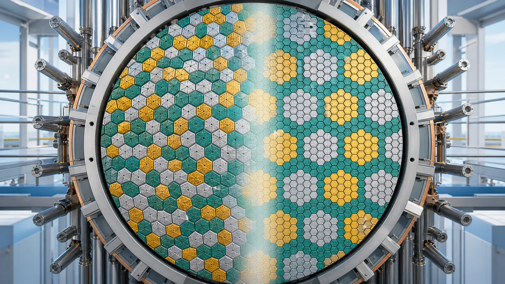
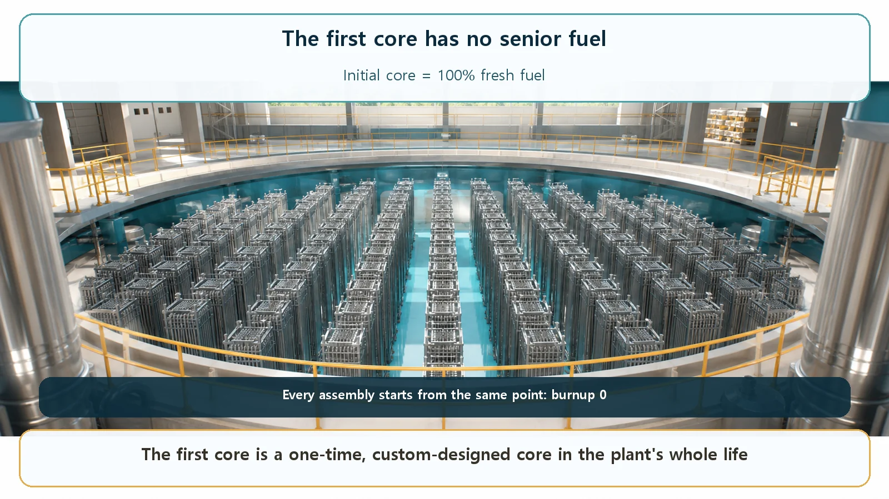
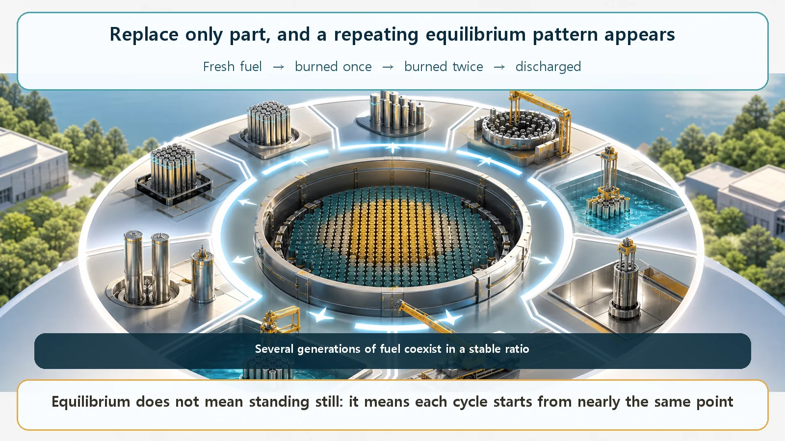

Long-Term Core Behavior & Fuel Cycle · 153
A Brand-New School Has No Seniors — The First Core and the Equilibrium Core
The initial core happens once; partial reloads then settle the core into an equilibrium where each cycle starts from nearly the same point.

A reactor's initial core is loaded entirely with fresh fuel, a state that happens only once in the plant's life. After that, only about one-third of the core is replaced at each refueling, and after several cycles fresh, once-burned and twice-burned fuel settle into a stable mix: the equilibrium core, whose start-of-cycle conditions repeat.
If you've been following how heat is made inside a reactor and where it goes, it's time to look at the core from a different angle. A core doesn't run for a day or two; it operates for months and years, and over that long stretch the fuel slowly changes from the inside. Interestingly, the core when a reactor is first switched on and the core after it has settled in over several years have quite different personalities. Their names are the initial core (or first core) and the equilibrium core. Let's look at the difference.
A school on opening day has no seniors
Imagine a school that has just opened. Its very first welcome ceremony looks unusual: every single student is a first-year. No second-years, no third-years. Nobody older to pass in the hallway, nobody to show the newcomers around. Everyone wears the same new uniform and looks around just as uncertainly. It's a year that happens only once in the school's history.
A reactor is exactly the same. When a newly built plant starts up for the first time, the fuel loaded into the core is all fresh fuel: fuel that has never been burned, straight from the factory. This first core, made up entirely of fresh fuel, is called the initial core, or first core. Like a school's opening year, it exists just once in the plant's whole life.

Why not replace the whole student body every year?
A natural question follows. When fuel gets old, why not send it all off, like a graduating class, and swap in a complete set of new fuel? Reactors don't do that. At each refueling, only the most-burned portion of the core is taken out, not the whole core. A typical amount replaced at one time is about one-third of the core. The rest stays, but is moved to different positions in the core (shuffled) and used again, and only as much fresh fuel as was removed goes in.
In school terms: each year only the top grade graduates, and only that many first-years enroll. Everyone else stays and moves up a grade. The school isn't replaced all at once; it turns over a little each year.
Why do it this way? After one cycle, the fuel still has plenty of usable energy left. Using it once and throwing it all away would be wasteful, and filling the core entirely with fresh fuel causes the "too-strong core" problem we'll come to shortly. So each fuel assembly stays in the core for roughly three to four cycles, burning a bit further each time, like moving from first year to third year, before it finally leaves.
After a few years, the school settles in
In the opening year the whole school was first-years. The next year, first- and second-years mix; the year after, there are third-years too. After a few years the school settles into its familiar shape, with first-, second- and third-years mixed in stable proportions. From then on the picture is almost the same every year: the top grade leaves and new students arrive, but the overall mix stays about the same.
The core follows the same course. After several refuelings, fresh fuel, once-burned fuel and twice-burned fuel are mixed in stable proportions, and the core's condition at the start of each cycle becomes nearly the same every time. A settled core like this, where the starting conditions and behavior repeat nearly identically cycle after cycle, is called the equilibrium core. Starting from the initial core and refueling again and again, the core gradually converges to this equilibrium roughly by the time the original fuel has all cycled out, a few cycles later. A reactor actually spends most of its life in this equilibrium state.

"Equilibrium" is easy to misread
The name invites one misconception worth clearing up. "Equilibrium core" sounds like a core that no longer changes and just sits still. Not so. Even in an equilibrium core, the fuel keeps burning and reactivity slowly declines during each cycle. "Equilibrium" doesn't mean nothing happens within a cycle; it means that the starting point repeats from one cycle to the next. In school terms, students keep learning and growing all through the school year, yet the picture each September, the mix of grades, repeats.
One more point: the move from initial core to equilibrium core doesn't happen in a single refueling. Just as a new school can't have all three grades in its first year, a core needs several cycles to reach a stable mix of generations.
Isn't all-new better?
An initial core full of fresh fuel might sound like the most "powerful" and best core, but that is exactly why it needs extra-careful handling. With nothing but fresh fuel, it has more reactivity margin than it needs right away: its excess reactivity is large. Spare strength sounds good, but it also means more equipment is needed to hold that strength down safely. So the initial core is given correspondingly more control means, such as absorber materials that are slowly used up while holding reactivity down (burnable poisons) and boric acid dissolved in the water.
Also, if every assembly were identical fresh fuel, power would tend to concentrate in certain spots. So the initial core deliberately loads fuel of slightly different enrichments in separate zones to flatten the power and keep it from piling up on one side. In short, the initial core is a one-time custom design for the special situation of "everything is new," while the equilibrium core is the standard normal operating state that will repeat for a long time. That's why fuel designers and core analysts usually use the equilibrium core as their reference for calculations.
Today's takeaways
- The initial core is the core loaded entirely with fresh fuel when a reactor first starts up, a special state that occurs only once in a plant's life (the school's "everyone is a first-year" year).
- At refueling, only about one-third of the core is replaced with fresh fuel and the rest is shuffled and reused; each assembly stays roughly three to four cycles before discharge.
- Repeated refueling mixes fresh, once-burned and multiply burned fuel in stable proportions, converging to an equilibrium core whose start-of-cycle conditions repeat.
- "Equilibrium" doesn't mean the core stops changing during a cycle; it means the starting point between cycles repeats, and reaching it takes several cycles.
- The initial core has large excess reactivity and needs a one-time custom design and control; the equilibrium core is the long-running standard state. Knowing both explains why plants design and run their early and later cores differently.
Why plants never replace all their fuel at once, and why they treat the first core differently from a settled one: the answer was inside these two names. And while the core lives on by swapping in new generations, what traces of time does each individual piece of fuel carry? That's a story for another time.